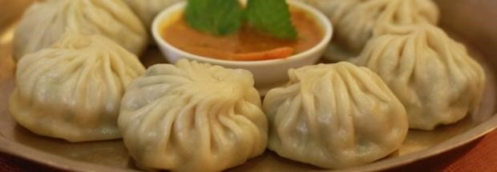

Tirtha's Momo
It is such a social dish by that I mean, you have one person doing the chopping, another person wrapping the momo, loads of laughing and gossiping at the same time - all about the teamwork! This is that one 'must-have' dish whenever I go back home since I'm always away at uni and don't make it just for myself.
Ingredients:
500 g chicken mince (or veg) - half red onion, finely chopped - a fourth cup coriander, finely chopped - 2 tsp fresh minced ginger - 2 tsp minced garlic - half tsp ground coriander - a fourth tsp turmeric - a fourth tsp ground cumin - 2 tsp vegetable oil or melted butter - salt to taste - 60 round wonton wrappers
Mode of preparation
For Filling: place all ingredients in a large bowl mix to combine. Cover and set aside. For Wrapping: Place a steamer with water in the base over high heat. Lay out wrappers on the bench, and moisten around the top edge of each wrapper using a wet brush. Place half a flat tablespoon of filling in the centre of each wrapper, and almost fold in half. Gradually bring sides together from one end whilst making a few pleats in one side and curving the momo so it sits upright. Repeat with remaining wrappers and filling. Steam for 8-10 minutes, or until wonton wrappers are tender. Serve immediately. It can also be fried or have it in some soup!
